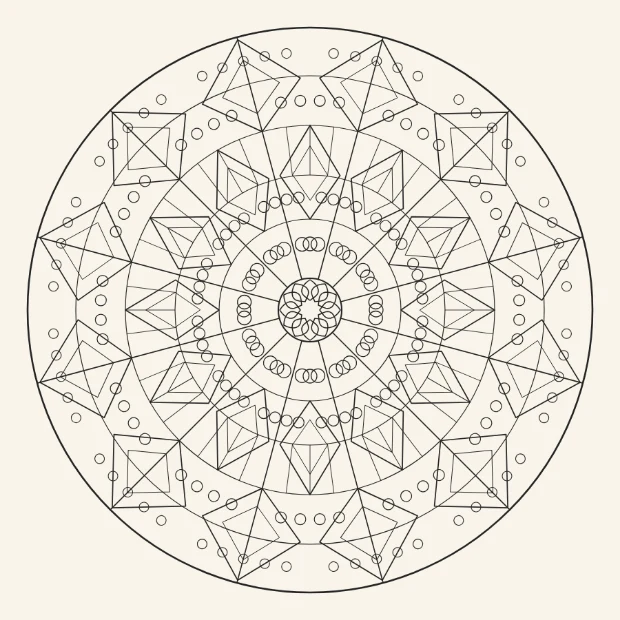
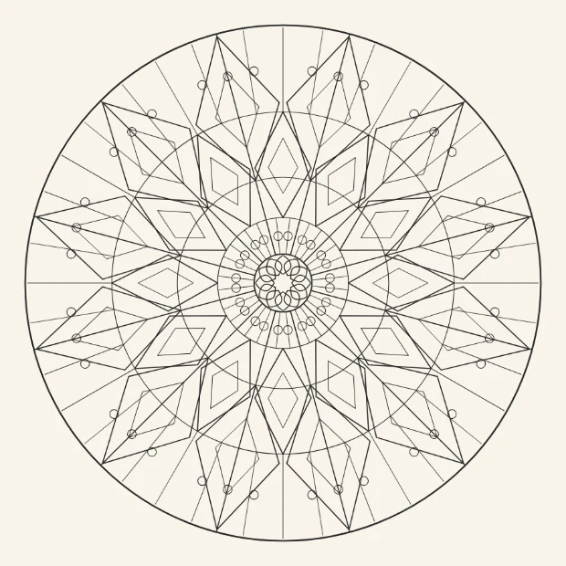
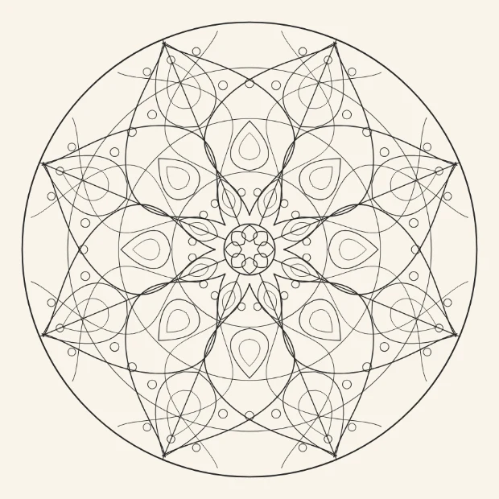
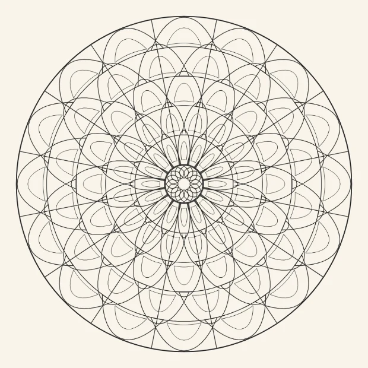
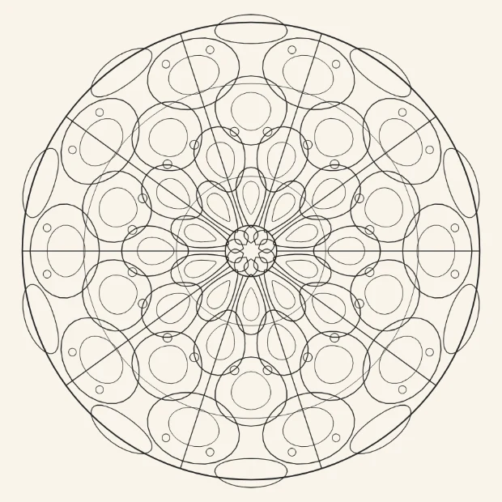

Schlussdurchsicht
Die zwölf gebauten Motive nebeneinander, absteigend nach
meinem Votum. Zum Entscheiden in einem Durchgang.
Das Votum ist meine Einschätzung, kein Beschluss.
Die Bilder sind der Katalogrender in 620 Punkten — also die App selbst,
keine Vorschau. Die Zahlen sind an derselben Zeichnung gemessen: dieselbe
Wandschwelle wie app.js, dieselbe Flächenzählung wie das
Füllwerkzeug, ausmalbar heißt ab 80 Bildpunkten Fläche — etwa neun
mal neun, die Untergrenze dessen, was ein Finger trifft und was Farbe
zeigt. Nichts ist entfernt; sagen Sie, was fallen soll.
6 behalten
4 behalten, mit Anmerkung
2 würde ich streichen
Die zwölf

Zellenwerk behalten
12 Achsen · 361 ausmalbare Felder von 542 ·
Median 355 px² · größtes Feld 0,5 %
steht in Feinwerk
Das beste der fünf neuen. Es ist unverwechselbar — niemand hält Zellenschmelz für irgendetwas anderes —, die Zellen sind großzügig (Median 355), und das größte Einzelfeld ist mit 0,5 % das kleinste aller zwölf. Nichts daran wackelt.

Tauwerk behalten
8 Achsen · 409 ausmalbare Felder von 603 ·
Median 426 px² · größtes Feld 0,6 %
steht in Feinwerk
Drei Zöpfe, sofort als Tauwerk lesbar, Median 426. Von den acht Achsen lebt es: große Felder, ruhiges Ausmalen, und trotzdem 409 ausmalbare. Das Gegenstück zu den sechzehnachsigen — jede Familie braucht so eines.

Spitzenrad behalten
16 Achsen · 449 ausmalbare Felder von 679 ·
Median 267 px² · größtes Feld 0,6 %
steht in Feinwerk
Vier Bänder, klar getrennt, nichts überlagert sich. Median 267 bei 449 ausmalbaren Feldern und das zweitkleinste größte Feld. Bei sechzehn Achsen sind die 449 rund 28 Entscheidungen — dicht, aber nicht mühsam.

Perlgrat behalten
16 Achsen · 389 ausmalbare Felder von 513 ·
Median 448 px² · größtes Feld 1,5 %
steht in Feinwerk
Die großzügigsten Felder der ganzen Familie (Median 448) und trotzdem 389 ausmalbare. Wer die Dichte scheut, fängt hier an. Der Perlgrat liest sich als Grat, nicht als Zufall.

Tropfensaum behalten
12 Achsen · 487 ausmalbare Felder von 1046 ·
Median 72 px² · größtes Feld 1,4 %
steht in Natur
Vier Reihen genesteter Tropfen, 487 ausmalbare — die zweithöchste Zahl. Die doppelte Innenkontur trägt hier sichtbar: Jeder Tropfen hat einen Kern, und der bekommt seine eigene Farbe.

Kordelstern behalten
8 Achsen · 505 ausmalbare Felder von 991 ·
Median 98 px² · größtes Feld 1,1 %
steht in Geometrisch-klassisch
Die höchste Zahl ausmalbarer Felder von allen (505) und das grafischste Bild der zwölf. Anmerkung: Die Strahlen sind sehr fein, der Median liegt deshalb bei 98. Wer die Nadeln einzeln färben will, braucht den Zoom — im Atelier reicht er bis 4.

Granulat behalten, mit Anmerkung
12 Achsen · 481 ausmalbare Felder von 742 ·
Median 158 px² · größtes Feld 1,6 %
steht in Feinwerk
Perlen und Rauten, 481 ausmalbare — inhaltlich richtig für die Familie. Was mir nicht gefällt: Die beiden inneren Perlreihen bei r≈96 und r≈164 stehen zu dicht beieinander und verklumpen zu einem Ring. Das ist eine halbe Stunde Nacharbeit, kein Grund zum Streichen — ich würde die innere Reihe herausnehmen.

Sprossenband behalten, mit Anmerkung
14 Achsen · 432 ausmalbare Felder von 614 ·
Median 523 px² · größtes Feld 0,9 %
steht in Feinwerk
Fünf Bänder mit Sprossen, Median 523 — die zweitgroßzügigsten Felder. Was mir nicht gefällt: Die Nabe. Die Sprossen des innersten Bandes laufen von r=46 aus, und 42 Linien treffen sich auf engstem Raum zu einem struppigen Büschel. Das innerste Band sollte weiter außen anfangen.

Gitterschale behalten, mit Anmerkung
12 Achsen · 333 ausmalbare Felder von 636 ·
Median 91 px² · größtes Feld 2,5 %
steht in Geometrisch-klassisch
Das Sterngitter ist stark und gehört nach Geometrisch-klassisch. Zwei Zahlen mahnen: 333 ausmalbare Felder — die wenigsten der zwölf — und mit 2,5 % das zweitgrößte Einzelfeld. Es ist also weniger dicht, als es aussieht. Behalten, aber es ist nicht das, wofür die Familie steht.

Rankengeflecht behalten, mit Anmerkung
8 Achsen · 409 ausmalbare Felder von 751 ·
Median 110 px² · größtes Feld 3,1 %
steht in Natur
Organisch, hübsch, und in Natur richtig aufgehoben. Was mahnt: Mit 3,1 % hat es das größte Einzelfeld aller zwölf — die Grenze des Prüflaufs liegt bei 4. Die Ranken lassen zwischen den Blattlagen große Flächen stehen. Das ist kein Fehler, aber es ist das am wenigsten dichte der Familie.

Schuppenwerk ich würde streichen
16 Achsen · 417 ausmalbare Felder von 887 ·
Median 65 px² · größtes Feld 0,9 %
steht in Feinwerk
Es sollte nach Dachziegeln aussehen. Es sieht nach Spirograph aus. Die Schuppenbögen kreuzen einander so flach, dass daraus keine Reihen werden, sondern ein Netz — und derselbe flache Winkel erzeugt die Splitter: Median 65, der niedrigste der zwölf. Der Kunstgriff „Schuppe" ist damit nicht eingelöst. Ich würde es herausnehmen und, wenn Sie mögen, mit echter Überdeckung neu zeichnen.

Kettenreif ich würde streichen
10 Achsen · 332 ausmalbare Felder von 536 ·
Median 199 px² · größtes Feld 1,1 %
steht in Feinwerk
Das schwächste der zwölf, und ich habe es zweimal überarbeitet. 332 ausmalbare Felder — die wenigsten, und wichtiger: Es liest sich nicht als Kette. Die Glieder überlappen zwar, aber ohne Über-und-Unter wirken sie wie hingeworfene Blasen, nicht wie eingehängte Ringe. Eine echte Verschränkung bräuchte Auslöschung — dieselbe Technik, die den Motiven bisher fehlt. Bis dahin: streichen.
Wenn Sie meinem Votum folgen
Dann fallen Schuppenwerk und Kettenreif, und Feinwerk steht
bei sechs Motiven — so groß wie „Zen & Achtsamkeit“, größer als
„Jahreszeiten“. Geometrisch-klassisch und Natur bleiben bei sieben. Das
ist eine tragfähige Familie, und keines der sechs ist nur dabei, um die
Zahl zu halten.
Die zwei Anmerkungen zu Granulat und Sprossenband sind
Nacharbeit, kein Streichgrund: eine Perlreihe heraus, ein Band weiter
außen anfangen lassen. Beides ist in einer Fassung erledigt und messbar.
Ein Wort zu den beiden, die ich streichen würde. Sie sind nicht
misslungen, sie lösen ihren eigenen Anspruch nicht ein: Eine Schuppe
muss die darunterliegende decken, ein Kettenglied muss durch
das nächste gehen. Beides braucht Auslöschung — eine Linie, die eine
andere unterbricht. Die haben die Motive bisher nicht, und sie wäre der
nächste der drei Bausteine. Bis dahin behaupten die zwei etwas, das man
ihnen nicht ansieht.